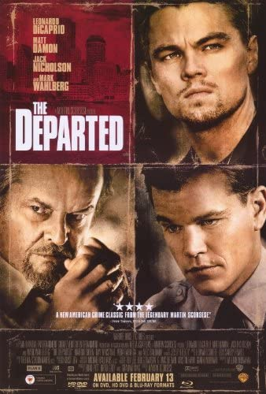
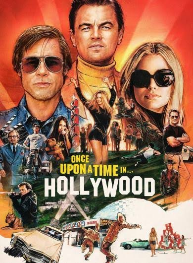
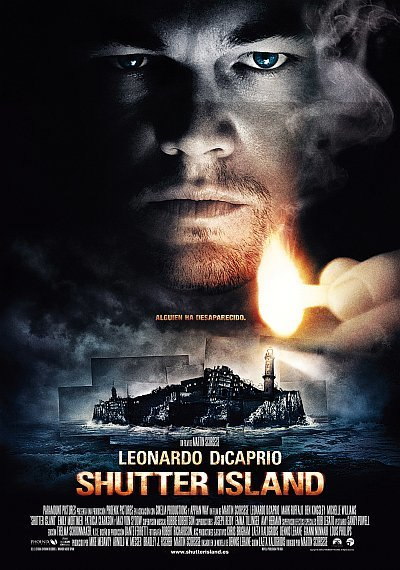
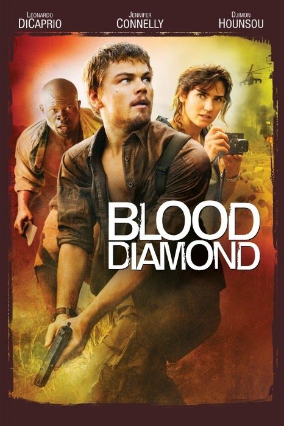

MoviesApp
Inicio
Generos
Peliculas
Series
Catch Me If You Can
The Wolf of Wall Street
The Revenant

The Departed
Titanic

Once Upon a Time... in Hollywood
Django Unchained
The Great Gatsby

Shutter Island

Blood Diamond
Don't Look Up
The Aviator